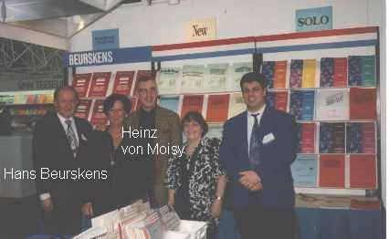
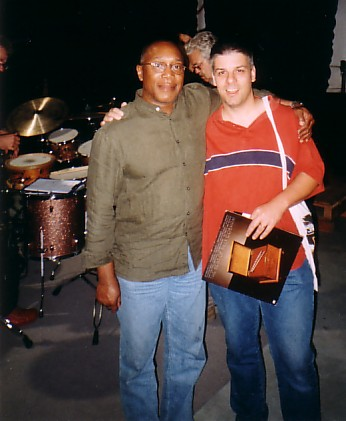
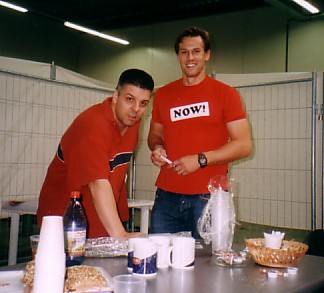
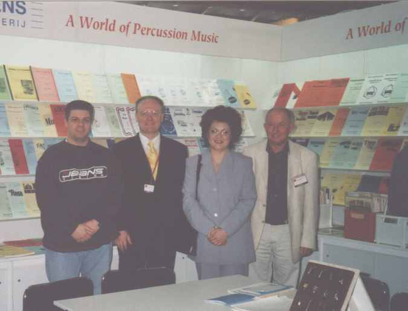

Galerie
Fotos
Vier Jahrzehnte Schlagzeug in Bildern — Ensembles und Konzerte, Workshops und Unterricht, Begegnungen mit großen Schlagzeugern und die allerersten Anfänge in Vijlen. Zum Vergrößern auf ein Foto klicken.
Auswahl
Höhepunkte
Begegnungen mit Billy Cobham, Thomas Lang, Jim Chapin, Nebojša Živković und vielen anderen — und Momente mit Ensembles und auf der Frankfurter Musikmesse.






Fotoarchiv
Als Dirigent
Schlagzeugensemble Musikschule Heinsberg
Erste Probe des Scherzo von Saul Goodman für Trio — Xylophon: Zoë; zwei kleine Trommeln: Paul; Pauken: Karl.

Schlagzeugensemble Musikschule Eschweiler
Erste Probe 2026 mit Sander; Nacht der offenen Kirchen 2024; Tag des Ehrenamtes 2023; und die Jahre 1991–2022.


St. Caecilia Broeksittard
Erstes Konzert im Forum Sittard (2022); mit der Rockgruppe Powerized (2024); Konzert bei Adams gemeinsam mit dem Ensemble der JMS Eschweiler; Sommerkonzert.


Schlagzeuggruppe Concordia Einighausen


Schlagzeugensemble Kreato Thorn


Drumband St. Stephanus Dieteren

St. Caecilia Schinveld

Sambabands — Ofden und Alsdorf

Jugend-Schlagzeugensembles
Konzert Langedael Vaals; Einighausen; Schimmert; Broeksittard.


Fotoarchiv
Workshops und Projekte
Workshops
Maasniel, Maasbracht, Mausbach, Eschweiler, Thorn, Ofden, Alsdorf, Heythuysen, Heerlen, Bunde und Sittard.


Instrumente bauen


Fotoarchiv
Unterricht
Kollegen
Mit Jo und Rafael.

Mit bekannten Schlagzeugern
Marcel van Vugt, Mark Andreas Giesecke, Wessela Kostowa, Hans Beurskens, Paul Bouten, Thomas Lang und Vic Firth.


Prüfungen


Als Schlagzeuglehrer


Wettbewerb während Corona, 2021


Musikschule Eschweiler


Musikschule Gangelt


Fotoarchiv
Als Spieler


Orchester und Ensembles
Konservatorium Maastricht (mit Carousel), Thorn, Treebeek, Maastricht, Thorn und Stolberg.


In der Kirche mit Gisela Freialdenhoven, Orgel (2024)

Young Jazz Cats
Mit Fats und den Young Jazz Cats.


Eschweiler, Linne, Thorn und Vaals